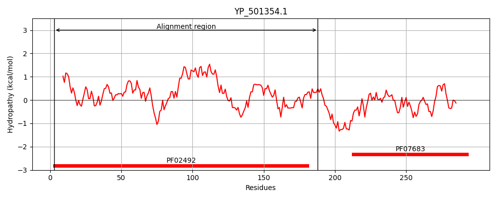
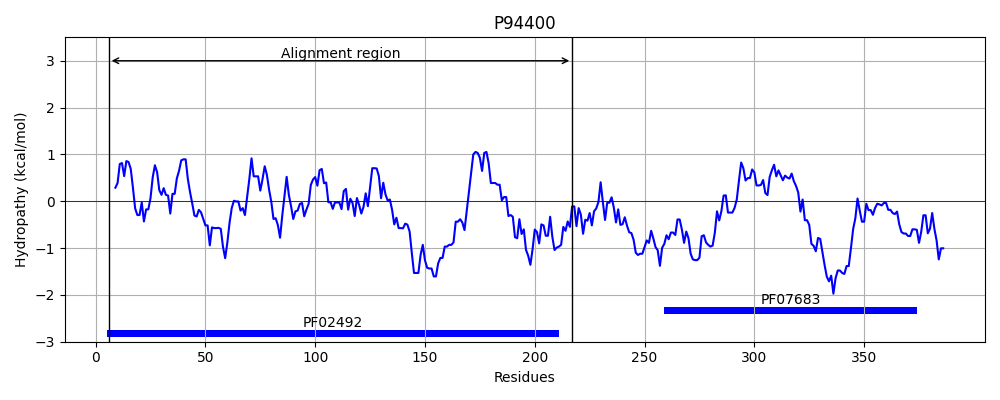
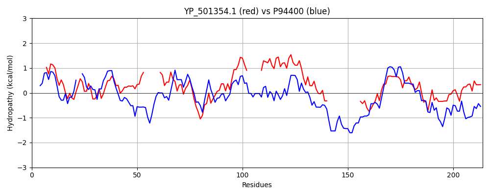

Hit Accession: P94400
Hit TCID: 9.B.10.1.1
Hit Description: gnl|BL_ORD_ID|11707 gnl|TC-DB|P94400|9.B.10.1.1 Putative metal chaperone yciC OS=Bacillus subtilis GN=yciC PE=2 SV=1
Mach Len: 214
e:0.000000
Query TMS Count : 0
Hit TMS Count: 0
TMS-Overlap Score: 0.000000
Predicted Substrates:CHEBI:10113;zinc(2+)
BLAST Alignment:
Score: 237 , Bit scores: 95 bits, E-value: 1.5e-22, Alignment length: 214, Percentage identity: 29
Query: 3 IVIIGGFLGGGKTTVLNHLLAESLKESLKPAVIMNEFGKMSVDGALVSEDIPLS-------ELTEGCICCAMKADVSEQLHQLYLKEQPDIVFIECSGIAEPV------SVLDACLTPILAPFTTITHMIGVIDASMYKHI---------------KSFPKDIQGLFYEQLAYCSVLFVNKIDSADVETTSKLLKDLEVINPEADIQVGMHGSV 188
+ ++ G+LG GKTT+LN +L +E LK AVI+N+ ++++D LV ++ LS E++ GCICC ++ D+ ++ +L + D + IE +GI+EP+ S +D + L F + M+ V+DA+ + H + ++I L +Q+ +C VL +NK D + +L L + P A + G+V
Sbjct: 6 VTVLSGYLGAGKTTLLNSILQN--REGLKIAVIVNDMSEVNIDAGLVKQEGGLSRTDEKLVEMSNGCICCTLREDLLIEVEKLAKDGRFDYIVIESTGISEPIPVAQTFSYIDEEMGIDLTKFCQLDTMVTVVDANRFWHDYQSGESLLDRKEALGEKDEREIADLLIDQIEFCDVLILNKCDLVSEQELEQLENVLRKLQPRARFIRSVKGNV 217 | Protein Hydropathy Plots: |
|---|
|  |  |
Pairwise Alignment-Hydropathy Plot:
|
|---|
|  |